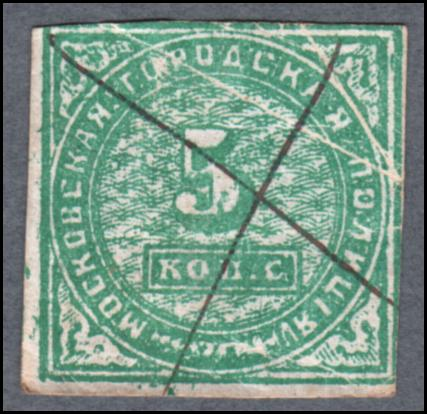
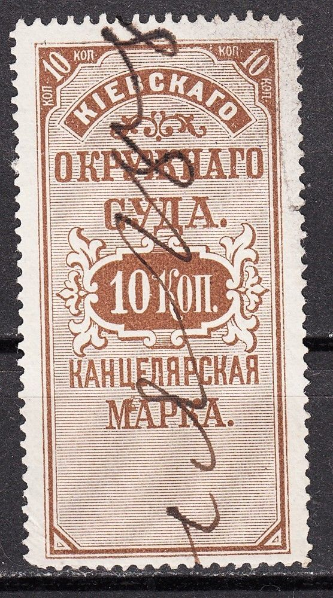
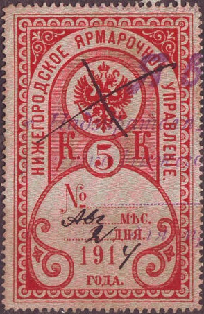
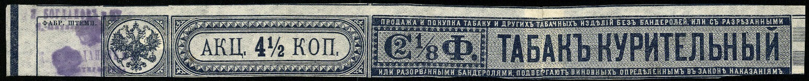

Return To Catalogue - Russia Fiscal stamps, part 1 - Russia Fiscal stamps, St.Petersburg - Russia overview
Note: on my website many of the
pictures can not be seen! They are of course present in the
catalogue;
contact me if you want to purchase the catalogue.
These stamps exist in two slightly different designs (text different, one set issued in 1890 and one set in 1892) in the values: 1 k brown and grey, 5 k blue and grey, 10 k brown and grey, 50 k orange and grey, 1 R black and yellow, 3 R green (two shades of green on one stamp), 5 R black and red, 10 R red and grey and 25 R blue and light blue.
I have seen the values 1 k yellow and black, 3 k green and black, 5 k blue and black and 10 k red and black.


I have seen the values 1 k black, 2 k brown, 3 k green, 5 k blue, 10 k red, 15 k lilac (with background pattern), 20 k green (with background pattern), 25 k brown, 30 k blue (with background pattern) and 40 k red (with background pattern) in the same design.

These stamps exist in the values 2 k black, 3 k blue, 5 k green,
10 k brown and 20 k red and were issued in 1861. They are all
imperforate, but the 5 k also exists perforated. A misprint 5 k
blue exists.
In the early Sowjet Republic letters didn't need a postage stamp. But in the 1920's stamps were reintroduced. Also fiscal stamps, etc. were allowed to be used as postage stamps. The above stamp is a marine fiscal stamp used for this purpose.
Some fiscal stamps of 1922
(Reduced size)
I have seen the values 1 k, 2 k, 5 k, 10 k, 25 k, 50 k, 75 k, 1R50, 4R50, and 7R50. They were first issued in 1913, the values 1 R, 2 R, 2.25 R, 3 R and 15 R should also exist. In a slightly different design (eagle in the middle) were issued the values 10 R, 30 R, 50 R and 100 R:
(Reduced size)
These consular stamps were used in 1922 with overprint as airmail stamps (12 m on 2 R25, 24 m on 3 R, 120 m on 2R25, 600 m on 3 R, 1200 m on 10 k, 1200 m on 50 k, 1200 m on 2R25 and 1200 m on 3 R). They are all very rare with this overprint.

(Genuine overprint, image obtained from
http://www.sandafayre.com)
Forgeries exist, examples:
(Genuine stamps with forged overprints)
The next stamp is a fiscal tax on shipments of stamps abroad (during the Sowjet era), I've seen the values 1 R, 3 R, 5 R and 10 R:
Land registration stamp of 1902
Revenue stamp of Estland of 1897 50 k
blue (exists with inverted 'N' just above the '5'). It was also
issued in 50 k red.
Kronstadt or Cronstadt fiscal stamp issued in 1881, hospital tax,
reduced size; a 1 R black and yellow and a 1 R blue and light
blue exist

Kiev fiscal stamp of 1881. A similar stamp in 30 k green also
exists.
Kiev, different design from 1886, issued in 15 k blue and 30 k
green.
Livny fiscal stamp (1887), in this design were issued 10 k brown
on yellow, 20 k brown on yellow, 30 k green on green and 60 k
green on green.
Issue for the town of Lucin in 1880: 10 k green, reduced sizes
 
Novgorod passport stamp of with inscription "190"
(number to be added to indicate the year), similar stamps exist
with dates "1893", "1894" (see second image),
"1895", "1896" and "1900". Three
values were issued, 5 k red on red, 60 k blue on blue and 1 R
violet on lilac. The 1 R value was only issued in and after 1895.
Note that the "4" in the 1894 stamp has been changed by
hand to a "5". Also a 5 k with "191'. If I'm well
informed in 1892 similar stamps were issue (5 k black on red and
60 k black on blue). .
Odessa 20 k black and red (normal border) and 5 k orange and
black (ornamental border), receipt stamps (1870 onwards). The
following values exist 1 k black and yellow, 2 k black and
yellow, 2 1/2 k black and grey, 5 k black and orange, 10 k black
and brown, 15 k black and lilac, 20 k black and red, 25 k black
and green, 50 k black and blue, 1 R black and yellow, 2 R black
and red, 2.50 R black and lilac. Two types exist, with normal
border (1870) and with ornamental border (1879).

(Piatgorsk Passport stamp)
Rostov fiscal stamp, 1 R blue with brown background (issued in
1898); hospital fund tax stamp.
Fiscal stamp of Warsaw of 1880, a 10 k black and blue and a 30 k
black and red were issued. They also exist perforated (issued in
1883).

Sebastopol 10 k blue, issued in 1907.


Simferopol: double headed eagle in a square. The value is 10 k
black on lilac (3 different types, one big sized, two smaller
sized with larger or smaller inscriptions) they were issued in
1879 and 1883.

Theater tax from 1892 for the resort of the empress Maria
Feodorova. The following values exist: 2 k green, 5 k blue, 10 k
orange, 25 k lilac and 50 k blue.


 .
.
Theater tax from 1898 for the resort of the empress Maria
Feodorova. There is a label attached to the left, which has been
torn off here. The following values exist: 2 k brown, 5 k blue,
10 k red, 25 k lilac and 50 k green.

Saratov 1877 issue, 20 k grey."C.O.C." written at the
bottom.

Riga, bathing towns police tax, 50 k, issued from 1883 to 1893, a
different color for each year.


{kind=link}
{kind=link}
{kind=link}
{kind=link}